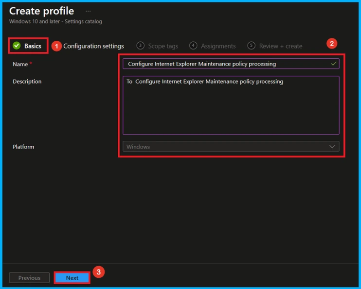
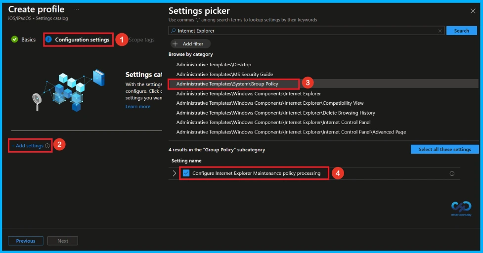
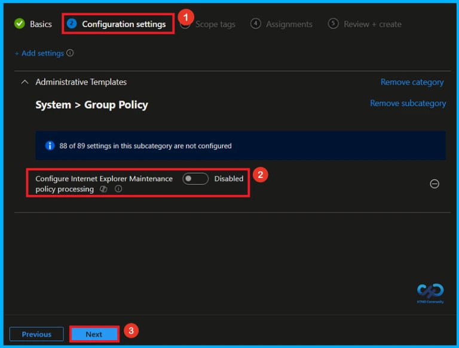
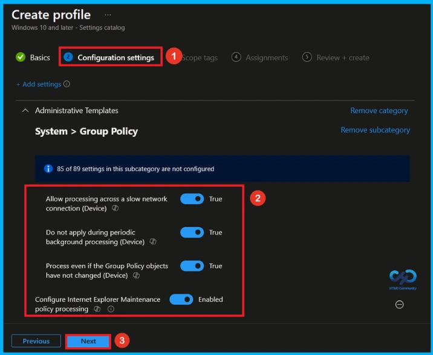
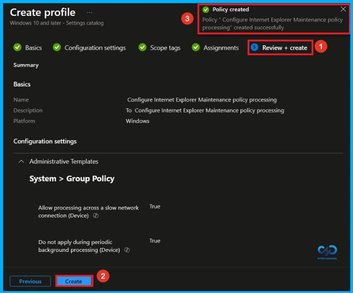
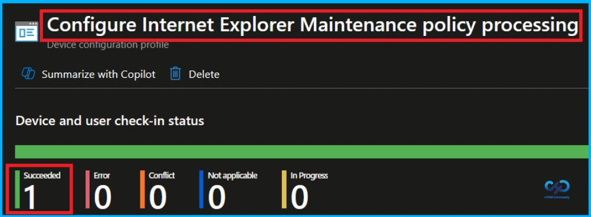
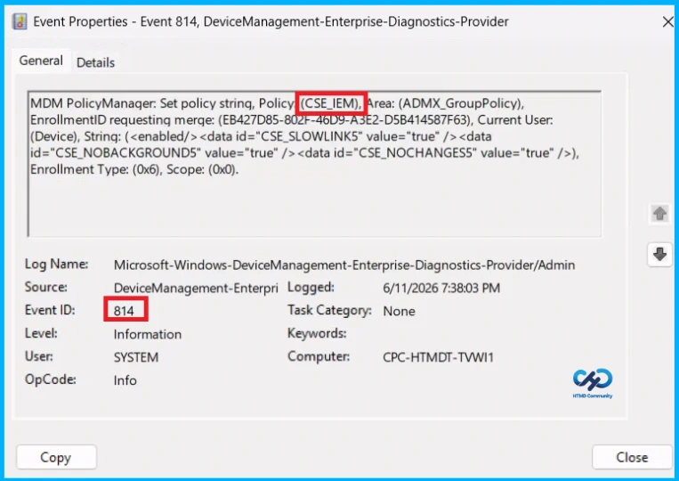
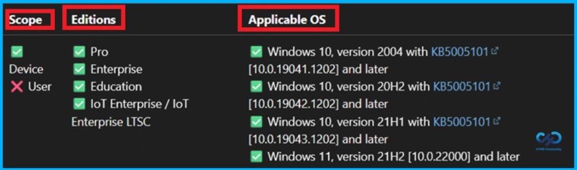
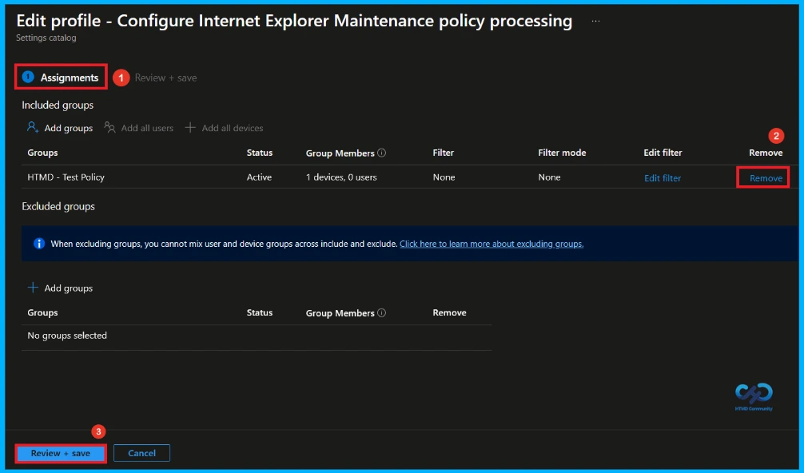
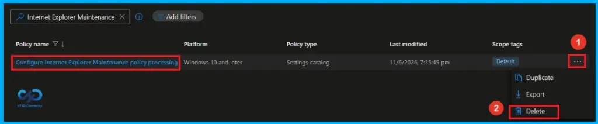

Key Takeaways
- This policy controls when Internet Explorer Maintenance policies are updated.
- It affects all policies that use the Internet Explorer Maintenance component of Group Policy.
- Administrators can configure how policies are processed, including updates over slow connections and background processing.
- If the policy is disabled or not configured, it has no effect on the system.
Hey, let’s discuss about Configure Internet Explorer Maintenance Policy Processing using Microsoft Intune. This policy setting determines when Internet Explorer Maintenance policies are updated. This policy setting affects all policies that use the Internet Explorer Maintenance component of Group Policy, such as those in Windows Settings\Internet Explorer Maintenance.
Table of Contents
Configure Internet Explorer Maintenance Policy Processing using Microsoft Intune
This policy setting overrides customized settings that the program implementing the Internet Explorer Maintenance policy set when it was installed. If you enable this policy setting, you can use the check boxes provided to change the options. If you disable or don’t configure this policy setting, it has no effect on the system.
Configure Policy with Intune Admin Center
To start Split Screen in Microsoft Edge policy creation, sign in with Microsoft Intune Admin center. Go to Devices > Configuration > +Create >+ New Policy. Look at the below screenshot.

Choosing Platform and Profile Type
On this page, you can select Platform and Profile before configuring the policy. It is a necessary step and you cannot skip it. Here I would like to configure the policy to Windows 10 and later platform and settings catalog profile. Then click on the Create button.

Filling Basic Details
Basic tab helps you to give an identify for the settings you have to select for policy creation. You should add appropriate name and description for policy. Here is Name is mandatory and description is optional. After adding this click on the Next button.

Configuration Settings
From the Configuration Tab, you can see the +Add settings hyperlink to access specific settings. When you click on this hyperlink, you will get Settings Picker. Here, I select the category as Administrative\ Templates\System\Group Policy. Then, I choose Configure Internet Explorer Maintenance policy processing settings.

Disable Internet Explorer maintenance Policy
After closing the settings picker, you can see the policy there. By default, internet explorer maintenance policy will be disabled. You can disable or enable this policy setting. If you like continue by disabling this policy click next.

Enable Internet Explorer Maintenance Policy
Here, you can enable this policy by toggling the switch from left to right. Then, click next to continue.
- Allow processing across a slow network connection: Updates policies even over slow network connections, though this can cause significant delays.
- Do not apply during periodic background processing: Prevents background policy updates while the computer is in use. Changes apply at the next user logon or system restart.
- Process even if the Group Policy objects haven’t changed: Reapplies policies even when no changes are detected, helping restore desired settings if they were modified.

Add Scope Tag
A scope tag in Intune is used to control visibility and access to Intune resources based on administrative roles. Scope tags are not mandatory. You can add the scope tag using the select scope tags button. Click Next to continue.

Assignments Tab to Add Group
To assign the policy to specific groups, you can use the Assignment Tab. Here I click, +Add groups option under Included groups. I choose a group(HTMD _Test Policy) from the list of groups and click on the Select button. Again, I click on the Select button to continue.

Review + Create Step
At the review + create step, you can review each tab to avoid misconfiguration or policy failure. After reviewing the details and making any necessary changes by clicking Previous. We click Create to finish, and a notification confirms that the “Configure Internet Explorer Maintenance policy processing created successfully”.

Monitoring Status
The Monitoring Status page shows whether the policy has succeeded or not. To quickly configure the policy and take advantage of the policy sync the assigned device on Company Portal. Open the Intune Portal. Go to Devices > Configuration > Search for the Policy. Here, the policy shows as successful.

Client Side Verification
Event Viewer helps you check the client side and verify the policy status. Open the Client device and open the Event Viewer. Go to Start > Event Viewer. Navigate to Logs: In the left pane, go to Application and Services Logs > Microsoft > Windows > DeviceManagement-Enterprise-Diagnostics-Provider. Event ID 814.
MDM PolicyManaqer: Set policy strinq, Policy (CSE_IEM), Area: (ADMX_GroupPolicy),
EnrollmentID requesting merqe: (EB427D85-802F-46D9-A3E2-D5B414587F63), Current User:
(Device), String: (<enabled/><data id=”CSE_SLOWLINK5″ value=”true” /><data id=”CSE_NOBACKGROUND5″ value=”true” /><data id=”CSE_NOCHANGES5″ value=”true” />), Enrollment Type: (0x6), Scope: (0x0).

Configuration Service Provider (CSP)
The Policy Configuration Service Provider (CSP) is a feature used by organisations to manage and control settings on Windows 10 and 11 devices.
Description Framework Properties:
- Format –
chr(string) - Access Type – Add, Delete, Get, Replace
ADMX mapping:
| Name | Vlaue |
|---|---|
| Name | CSE_IEM |
| Friendly Name | Configure Internet Explorer Maintenance policy processing |
| Location | Computer Configuration |
| Path | System > Group Policy |
| Registry Key Name | Software\Policies\Microsoft\Windows\Group Policy{A2E30F80-D7DE-11d2-BBDE-00C04F86AE3B} |
| ADMX File Name | GroupPolicy.admx |

How to Remove Assigned Group From this Policy
If you want to remove the Assigned group from the policy, it is possible from the Intune Portal. To do this, open the Policy on Intune Portal and edit the Assignments tab and the Remove Policy.
To get more detailed information, you can refer to our previous post – Learn How to Delete or Remove App Assignment from Intune using by Step-by-Step Guide.

How to Delete this Policy from Intune Portal
You can easily delete the Policy from the Intune Portal. From the Configuration section, select the policy(Configure Internet Explorer Maintenance policy processing) and click the 3 dots. Here, you can delete the policy and It will completely remove it from the client devices.

Need Further Assistance or Have Technical Questions?
Join the LinkedIn Page and Telegram group to get the latest step-by-step guides and news updates. Join our Meetup Page to participate in User group meetings. Also, Join the WhatsApp Community and WhatsApp Channel to get the latest news on Microsoft Technologies. We are there on Reddit as well.
Author
Anoop C Nair has been Microsoft MVP from 2015 onwards for 10 consecutive years! He is a Workplace Solution Architect with more than 22+ years of experience in Workplace technologies. He is also a Blogger, Speaker, and Local User Group Community leader. His primary focus is on Device Management technologies like SCCM and Intune. He writes about technologies like Intune, SCCM, Windows, Cloud PC, Windows, Entra, Microsoft Security, Career, etc.